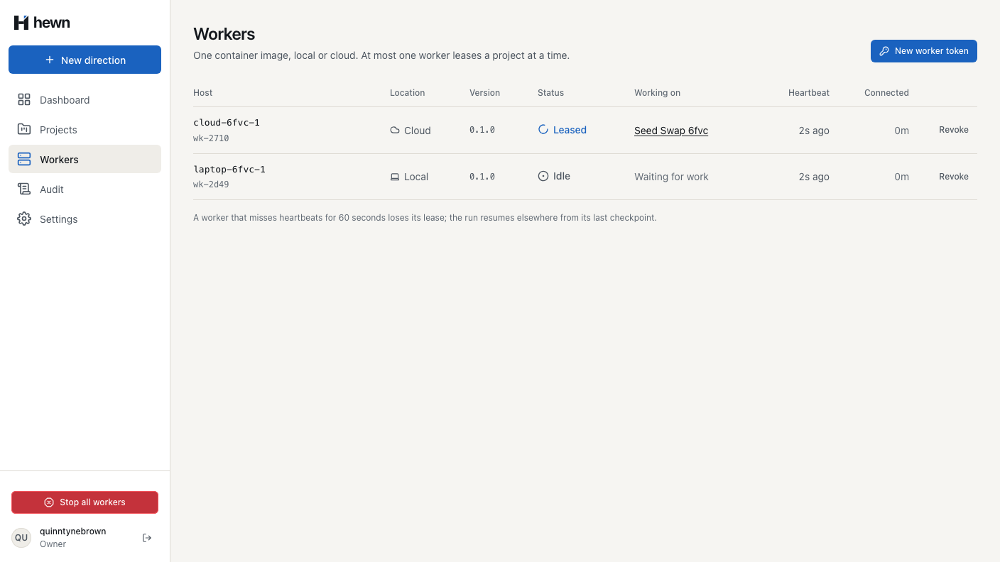
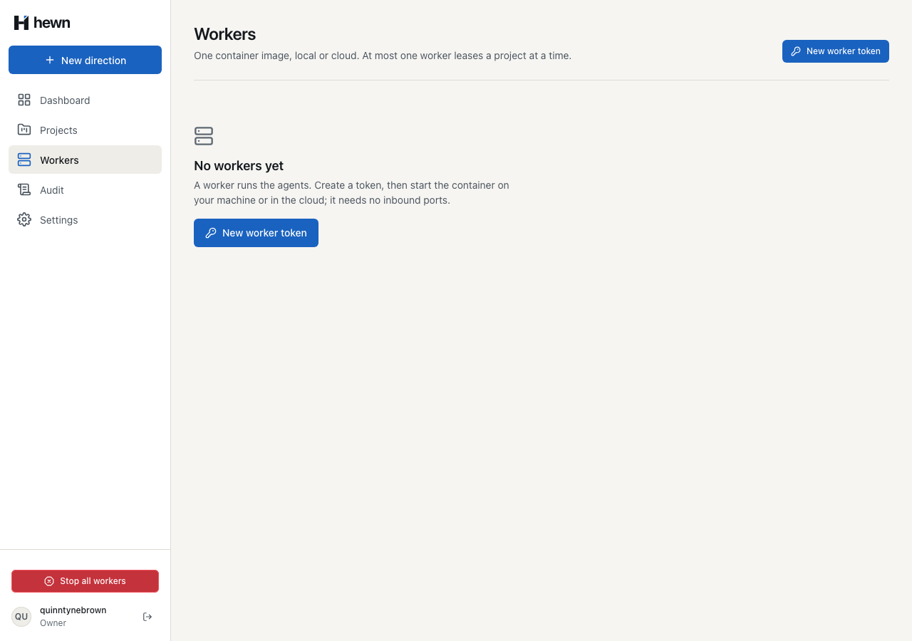
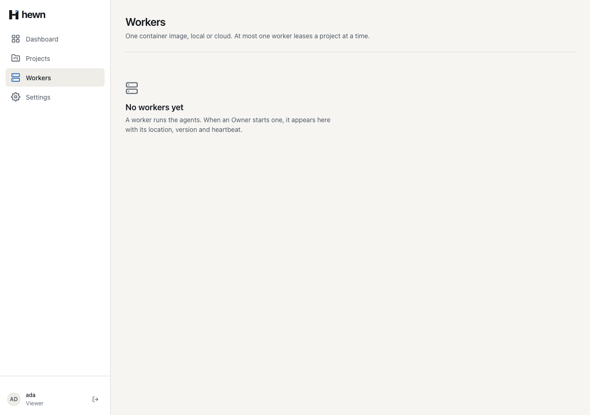
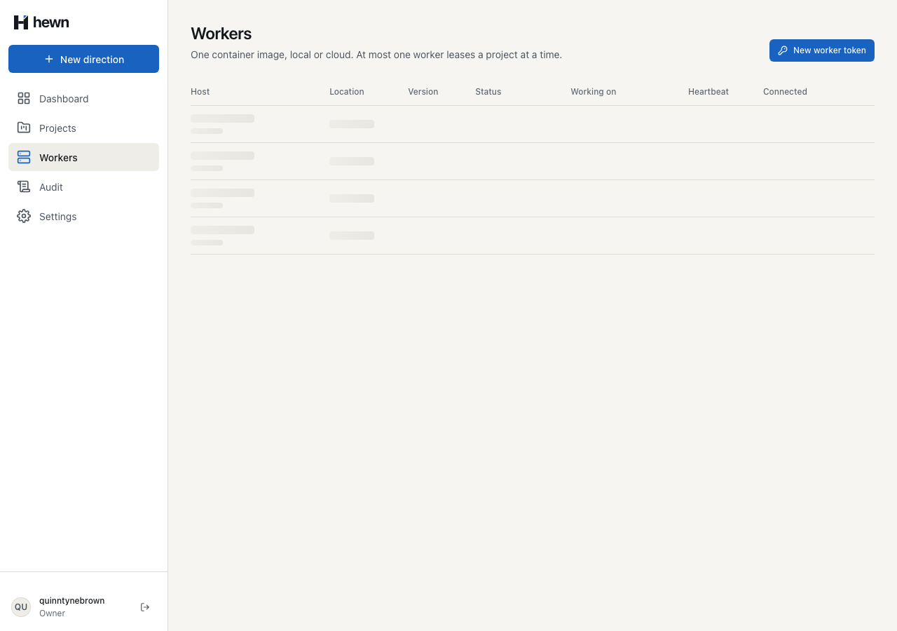
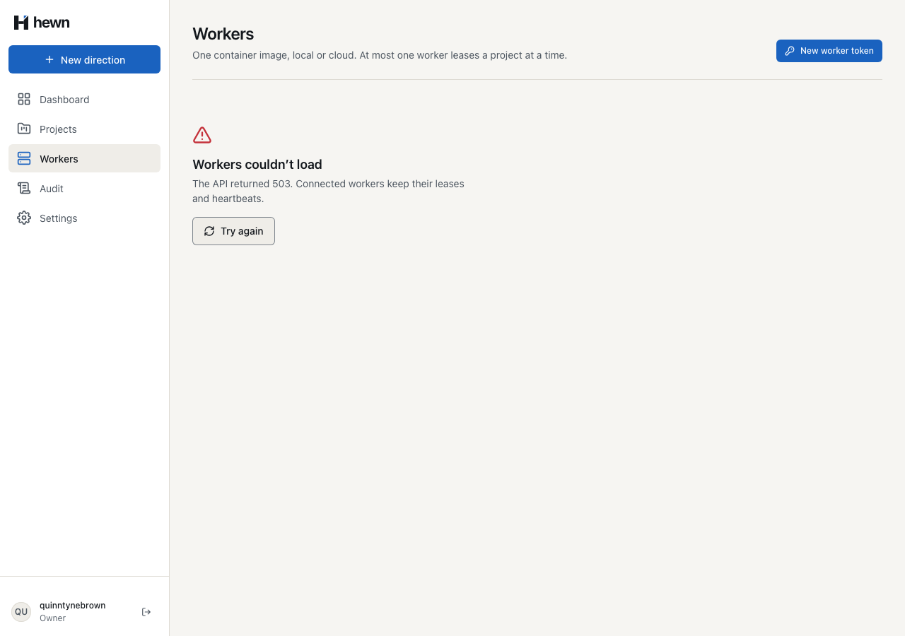
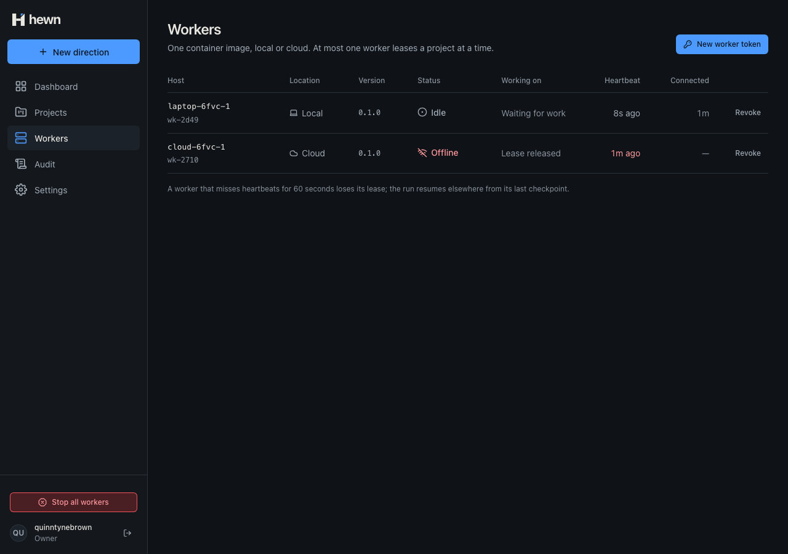
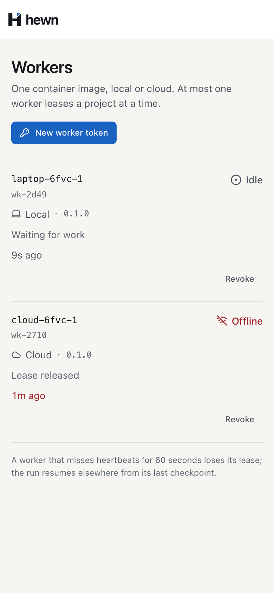

Every worker, live: connected, leased, idle, offline.



} @else if (store.view(); as view) {
@if (rows().length === 0) {
<div class="empty">
<svg hw-icon name="workers"></svg>
<div>
<h2 class="empty__title">No workers yet</h2>
@if (session.isOwner()) {
<p class="empty__text">
A worker runs the agents. Create a token, then start the container on your machine or
in the cloud; it needs no inbound ports.
</p>
} @else {
<p class="empty__text">
A worker runs the agents. When an Owner starts one, it appears here with its location,
version and heartbeat.
</p>
// A stage starting, finishing or stopping changes what a worker is doing: the Workers view reads the list again.
if (events.Any(e => e.Type == Hewn.Application.Pipeline.PipelineOrchestrator.StageChanged))
{
await hub.Clients.Group(MissionControlHub.WorkersGroup).SendAsync("WorkersChanged", cancellationToken);
}
const activityRank: Record<string, number> = { Busy: 0, Idle: 1, Offline: 2 };
/** Workers order: leased first, then idle, then offline; within each, the longest connected first. */
export function byActivity(
a: { status: string; registeredAt: string },
b: { status: string; registeredAt: string },
): number {
return (
(activityRank[a.status] ?? 3) - (activityRank[b.status] ?? 3) ||
a.registeredAt.localeCompare(b.registeredAt)
);
}
var since = clock.GetUtcNow() - Run.LeaseDuration;
var online = (await db.Workers.AsNoTracking()
.Where(w => w.RevokedAt == null && w.LastSeenAt >= since)
.Select(w => w.Id)
.ToListAsync(cancellationToken)).ToHashSet();
var changed = _online is not null && !online.SetEquals(_online);
_online = online;
if (changed)
{
await workers.WorkersChangedAsync(cancellationToken);
}
return changed;
private static readonly TimeSpan Interval = TimeSpan.FromSeconds(1);
protected override async Task ExecuteAsync(CancellationToken stoppingToken)
{
using var timer = new PeriodicTimer(Interval, clock);
do
{
try
{
using var scope = scopes.CreateScope();
await presence.SweepAsync(scope.ServiceProvider.GetRequiredService<IAppDbContext>(), stoppingToken);
}
catch (Exception e) when (e is not OperationCanceledException)
{
logger.LogError(e, "Worker presence sweep failed");
}
const timer = setInterval(() => void this.workers.refresh(), 5_000);
inject(DestroyRef).onDestroy(() => clearInterval(timer));
// A worker registering, leasing or finishing shows at once (L2-026 AC1); the timer covers heartbeats.
inject(PROJECT_EVENTS)
.followWorkers()
.pipe(takeUntilDestroyed())
.subscribe({ next: () => void this.workers.refresh(), error: () => undefined });


async refresh(): Promise<void> {
try {
this.view.set(await firstValueFrom(this.api.list()));
this.failure.set(null);
} catch (error) {
// Keep what we had; the next refresh tries again.
this.failure.set(error);
}
/** Shown only while there is nothing to show: a later failed refresh keeps the rows already read. */
protected readonly failure = computed(() =>
this.store.view() === null && this.store.failure() !== null
? notLoaded(this.store.failure())
: null,
);
// 60 seconds since its last heartbeat: it is Offline, and Workers is told.
_factory.Clock.Advance(TimeSpan.FromSeconds(31));
await _factory.SweepWorkerPresenceAsync();
Assert.True(await ArrivesAsync(changes, 1), "told it went offline");
var listed = (await HewnClient.ReadJsonAsync(await viewer.GetAsync("/api/workers"))).GetProperty("workers")[0];
Assert.Equal("Offline", listed.GetProperty("status").GetString());
// It asks for work again: it is back, and Workers is told.
await worker.LeaseAsync();
await _factory.SweepWorkerPresenceAsync();
Assert.True(await ArrivesAsync(changes, 2), "told it came back");
// It stopped heartbeating; 60 seconds after it was last heard from it is Offline.
const last = (await workers.workers()).workers.find((w) => w.name === name) as unknown as { lastSeenAt: string };
const due = Date.parse(last.lastSeenAt) + 60_000;
await expect(workers.details(name).status).toHaveText('Offline', { timeout: due - Date.now() + 5_000 });
expect(Date.now() - due, 'shown Offline within a second or so of the 60-second mark').toBeLessThan(1_500);
expect(await page.evaluate(() => (window as unknown as { followed?: boolean }).followed)).toBe(true);

